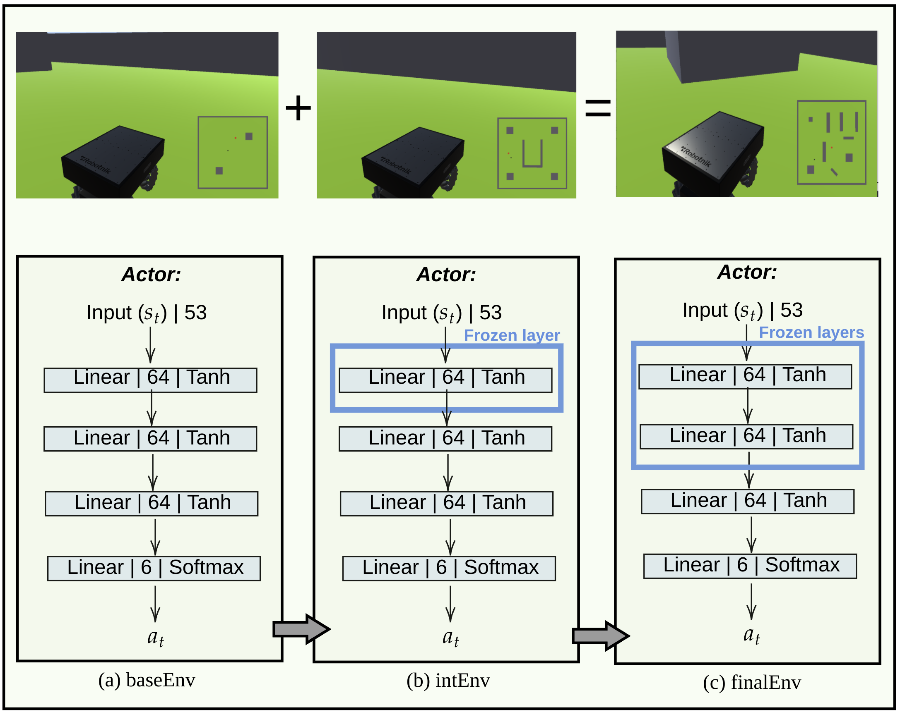

Curriculum Learning for Safe Mapless Navigation
L. Marzari, D. Corsi, E. Marchesini, A. Farinelli - ACM SAC IRMAS 2022
This work investigates the effects of Curriculum Learning (CL)-based approaches on the agent's performance in a mapless navigation context, with particular focus on the safety aspect.